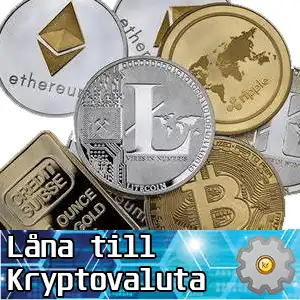

Att låna pengar för att investera i kryptovaluta kan vara ett klokt lån om investeraren har god kunskap om kryptomarknaden och en tydlig strategi för att minimera riskerna.
Genom att använda lån kan investeraren potentiellt öka sin exponering mot kryptovalutor och dra nytta av prisuppgångar, men det är viktigt att vara medveten om att det också medför betydande risker, särskilt med tanke på den volatila naturen hos kryptomarknaden.

Frågor och Svar []
Det är bäst att kolla på skatteverket för att få rätt information om kryptovaluta och skatter.
Om man är införstådd med den höga risken kan man låna pengar för att köpa kryptovaluta. Om värdet på kryptovalutan ökar är det ett sätt att utnyttja potentialen för att göra en vinst.
De främsta riskerna inkluderar prisvolatilitet på kryptovalutamarknaden och risken för förlust. Om värdet på kryptovalutan minskar kan låntagaren hamna i en situation där skulden överstiger tillgångsvärdet.
Det finns inga regler kring vad man får göra med ett lån. Ett blancolån kan användas till vad som helst.
Vanliga lån som privatlån, kreditkort eller lån med säkerhet som exempelvis hem- eller fordonslån kan användas. Det finns också specifika plattformar som erbjuder kryptobaserade lån.
Det följer samma lagar som alla andra investeringar. Om värdet på den köpta kryptovalutan ökar, kan låntagaren dra nytta av potentiella vinster som överstiger lånet och räntekostnaderna.
Räntekostnader påverkar den totala kostnaden för lånet och kan minska den potentiella vinsten efter att lånet betalats tillbaks.
Om man tar ett lån utfärdat i kryptovaluta kan det krävas sådan säkerhet. Vanliga lån är baserade på kreditvärdighet och inkomst.
Om du har använt kryptovaluta som säkerhet för lånet kan långivaren ha rätt att sälja eller likvidera dina tillgångar om du inte uppfyller lånevillkoren.
Det är bäst att kolla på skatteverket för att få rätt information om kryptovaluta och skatter.
Låna till investering i kryptovalutor
Dumt att låna pengar för att köpa kryptovaluta? Det beror på hur man ser på saken. De flesta lån används till konsumtion och köp som garanterat inte kommer att ge någon vinst så att låna pengar till en investering som förvisso har väldigt hög risk men kan ge stora vinster är jämfört med vad folk annars gör med sina lån inte så dumt som det först kan låta.
Vad är egentligen dummast? Att fortfarande betala av på en semesterresa som man gjorde för flera år sedan eller att man tog chansen att göra en investering som gick åt skogen? Man måste våga för att vinna.
Just nu är det lättast att få ett bra lån hos: Lånekollen
Om man går in fullt beredd på att det kan gå åt skogen och att man får betala för ingenting så har man rätt inställning och kan gå vidare med ett kryptolån.
Kursen på kryptovalutor svänger och med lite tur kan man komma in precis när det sticker i väg, göra en bra vinst och betala tillbaks lånet.
Efter att man gjort vinst och betalat tillbaks sitt kryptolån kan man börja om igen med egna pengar.
Kan du få ett lån för att köpa kryptovaluta?
Privatlån är blancolån och de kan användas till precis vad som helst. Om du tänker ta ett privatlån för att köpa kryptovaluta behöver du inte tala om det för långivaren.
Om inget annat anges tillåter de flesta långivare dig att ta lån för vad du vill så länge du uppfyller behörighetskraven och klarar en kreditkontroll. Om du letar efter ett lån för att köpa kryptovaluta, kolla in räntor från de bästa långivarna för lån utan säkerhet på lastoffer.net
Eftersom lån för att köpa kryptovaluta är relativt nytt fenomen förbjuder än så länge ingen långivare någon kund att använda lånepengar för detta ändamål.
Folk har lånat pengar för att spela på casino i alla tider och det är knappast någon långivare som frågar vad pengarna går till. Du kan alltså lugnt använda pengarna för att köpa kryptovaluta.
Att tänka på innan man lånar för att köpa kryptovaluta
Först och främst måste man vara medveten om att kryptovaluta är en extremt riskabel och osäker investering.
Du kommer att åta dig att göra betalningar och betala ränta på ett lån oavsett vad som händer med värdet på din kryptovaluta. Eftersom kryptovalutamarknaden är oreglerad och volatil kan du förlora pengar. Det gäller därför att ha goda marginaler och vara beredd på att investeringen kan gå back.
På många sätt liknar att använda ett lån för att köpa kryptovaluta att få ett lån för spel. Du kan inte garantera att du kommer att tjäna pengar på kryptovaluta men måste betala lånet oavsett.
Om du planerar att betala lånet med vinst kanske du inte kan. Om du förlorar pengar totalt sett på kryptovaluta kanske du inte kan göra betalningar på lånet. Om du skulle missa betalningar på lånet drar det ner din kreditscore och gör det svårare att få låna pengar till annat.
I allmänhet bör du bara köpa kryptovaluta med pengar du har råd att förlora. Du bör inte köpa den med ett lån eller kreditkort om du inte är säker på att du kan betala.
Kan man belåna kryptovaluta?
Det är möjligt att använda din digitala valuta som säkerhet för att köpa mer kryptovaluta genom kryptoutlåning. Det finns kryptoutlåningsplattformar där det går att göra.
Kryptolån har några fördelar, inklusive låga räntor, val av lånevaluta, snabb finansiering och ingen kreditkontroll. Att sätta upp kryptovaluta som säkerhet är dock extremt riskabelt, eftersom kryptovaluta kan vara volatil och värdet på dina tillgångar kan sjunka avsevärt.
Detta gör att du riskerar att misslyckas med ditt lån och är skyldig tillbaka mycket mer än du ursprungligen lånade.
Det finns också andra risker och nackdelar, inklusive varierande återbetalningsvillkor och tillgångsberättigande, samt att inte kunna komma åt din valuta som används som säkerhet under lånets löptid.
Rekommenderas kryptolån?
Det går knappast att hitta någon expert som rekommenderar någon att ta ett lån av något slag för att investera i kryptovaluta. Förvisso är digitala valutor i ropet just nu och en investering kan bli mycket lönsam, är det en extremt instabil marknad.
Om du vill komma in i kryptovaluta är det viktigt att läsa på och bara investera med pengar som du har råd att förlora om saker går söderut.
Varning för kryptolån
Att ta på sig skuld är ett stort beslut och bör aldrig göras lätt utan att överväga alla möjliga konsekvenser. Vissa av branschens stora profiler har sagt att de tog lån för att köpa Bitcoin medan andra tvärtom varnar för den metoden.
Ethereums medgrundare Vitalik Buterin har varnat för den här typen av lån. Han har gång på gång varnat sina anhängare för att ta ut privatlån för att köpa ETH. Han sa att han redan 2013 sålde hälften av sin Bitcoin-portfölj istället för att ta ut ett lån när hans verksamhetbehövde en kontanter.
Låna till Bitcoin eller Ether?
Några av de mer etablerade kryptorna som BTC (Bitcoin) och ETH (Ether) är några av de mest likvida tillgångarna i världen. Detta beror på ökningen av omsättning på börser i nästan alla hörn av världen. Detta innebär att du kan sälja och köpa dessa tillgångar blixtsnabbt dygnet runt med låga avgifter.
Ny investeringsmöjlighet
Handel med kryptovalutor erbjuder en ny möjlighet att tjäna pengar och kan vara mycet lönsamt för den som vet vad han gör (eller har tillräckligt med tur). Precis som valutamarknaderna har kryptohandlare stora möjligheter att tjäna pengar på olika valuta- och kryptopar. Par som går starkt kan leverera mer i vinst än vanliga aktier och valutahandel.
Eftersom Bitcoin och andra altcoins inte kontrolleras av en centralbank blir den immun mot inflation. Regeringar bestämmer hur mycket av deras kontanter som är i omlopp vid varje given tidpunkt och håller därmed strikt kontroll över inflationen, vilket i sin tur har makt att påverka andra marknader som oljepriset och så vidare.
Risk med lag mot kryptoinvesteringar
Även om många regeringar försöker reglera kryptovalutaindustrin har innovationshastigheten långt överträffat reglernas. I vissa länder har regeringar inte kunnat reglera dessa digitala valutor och har varit tvungna att förbjuda dem helt och hållet.
Den största risken med att låna pengar för att köpa kryptovalutor är att de blir helt förbjudna och därmed förlorar det mesta av sitt kapital.
Oavsett om det blev vinst eller förlust ska resultatet av investeringen deklareras. Läs mer på skatteverket om skatter och kryptovaluta.
Att låna till en investering innebär alltid en risk men till skillnad från konsumtionslån finns det potential att inte bara behålla kapitalet utan få det att växa.
Friskrivning: All information var korrekt vid publiceringstillfället. Räntor och avtalsvillkor förändras kontinueligt och därför kan långivarens villkor ha ändrats. LastOffer.net är inte en låneförmedlare, kreditmarknadsföretag eller långivare. För individuell vägledning hänvisar vi till en professionell lånerådgivare. LastOffer.net kan erhålla ersättning för länkar och hänvisningar till andra hemsidor, men vi förhåller oss objektiva till den information vi förmedlar. För frågor, funderingar eller påpekande om avvikelser, vänligen kontakta oss på info@lastoffer.net. Genom att använda vår webbplats accepterar du dessa villkor.